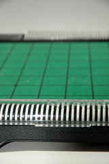
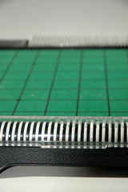

|
 |

|
History
Othello was originally invented with the name Reversi in England around 1880 by Lewis Waterman, who may have copied most of the ideas of the game from James Mollett. Mollett published a very similar game called "The Game of Annexation" in 1870, which had nearly identical rules but used a cross shaped board instead of a standard square. Reversi was marketed in 1888 by Jaques and Sons of London and a book titled "Reversi and Go Bang" was published in 1890. The rules for this game had two major differences from the modern game and are described in the Variants section. German games publisher Ravensburger began producing Reversi games in 1898. The game was reintroduced as Othello in the early to mid 1970's by Goro Hasegawa, who wrote the book "How to Win at Othello." The original trademark was held by Tsukuda Original but is now registered to Anjar Co., who licenses the name to distributors all over the world. The name Othello originates from the Shakespeare play of the same name, most likely due to the conflict between the dark-skinned Moor and the lighter-skinned European present in the play being an analogy to dark versus light pieces in the game. Othello is most popular in Japan but has a great following worldwide. The Othello World Championship has been held every year since 1977.
Game Play
The Pieces:
The pieces are usually black and white circular chips. Most physical productions of the game use chips that are black on one side and white on the other, as this makes sense for the rules of the game. Mathematically, any two types of pieces can be used as long as a player only uses one of them.
Rules:
To move: Place a chip with your color facing up on any empty square on the board such that there exists a straight (horizontal, vertical, and diagonal) line connecting that square to another square that is occupied by your piece with all the squares in that line occupied by the opponent's pieces. There must be at least one opponent's piece in between the piece you just placed and the one it forms a straight line with. All of the opponent's pieces in that line are flipped over to your color. If a player has no legal moves, the turn passes to the opposing player. If neither player can make a legal move, then check for the win condition.
To win: A game ends when neither player can make a legal move (e.g. when the board is full). At this point, count the number of pieces each player has on the board. Whoever has a higher score wins.
Place two pieces of each color in the 4 center squares of the board as described so that pieces of the same color are in opposite corners and the white piece is in the top left corner. Whoever plays black goes first. The players alternate making legal moves. Whenever a player cannot make a legal move, he or she passes the turn to the other player. If neither player can make a legal move, the game ends and scores are counted up. Whoever has more pieces on the board wins.
Strategies:
A lot of strategy exists for this game. Refer to the References section for links to more. A brief description of a couple basic ideas follows.
Corners: Corners are valuable because once possessed, they can never be flipped.
Mobility: Restricting the number of possible moves for your opponent allows you to control the game more because they will have fewer moves to pick from and thus are easier to predict. This is usually done by playing for less pieces during midgame so that the opponent has less pieces of pieces. This strategy must be used with care, however, because playing a minimum piece strategy can easily kill one's own mobility.
Variants:
Misere: Have less pieces on the board when neither player can make a move.
Board Size: Boards of any size can be used, although the most practical are different sized square boards.
Reversi "original" rules: These were the rules the game was played with before it was called Othello. The first four pieces were played anywhere on the board as long as they were adjacent to each other. There was also a fixed number of pieces for each player. If a player ran out of pieces, the opponent continued making moves until the game ended. Although these rules were associated with Reversi from 19th century Europe, nowadays Reversi and Othello are synonymous and refer to the modern rules.
Alternate names:
Reversi
Annex
Annexation
Takeover
Pictures:
|
|
 |
|
References: External Links:
Bell, R. C. Board and Table Games from Many Civilizations. New York, N.Y.:
Dover, 1979. 74.
A History of Othello. Othello University. 16 Apr 2006. <http://home.nc.rr.com/othello/history/>.
Othello. BoardGameGeek. 16 Apr 2006. <http://www.boardgamegeek.com/game/2389>.
Othello Gateway. 16 Apr 2006. <http://www.othellogateway.com>.
Reversi. 7 Apr 2006. Wikipedia. 15 Apr 2006. <http://en.wikipedia.org/wiki/Reversi>.
The Othello Guide. 16 Apr 2006. <http://www.reversi.se/>.
E-book with good introduction to Othello strategy.
Great site with lots of info about international play and strategy. Also has many game replays.
Another site with good information on the game and links to many other sites with Othello content as well.
The Wikipedia page for Othello (Reversi) is well researched and is a good overview of information relating to the game.